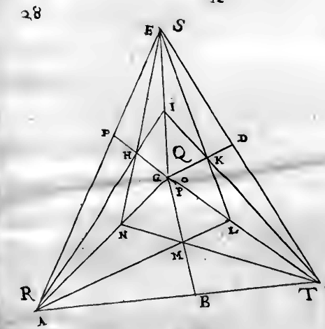

Propositio XXIII · Theorema XII¶


PROP. XXIII. THEOR. XII. (tab. 3. fig. 28, pp. 31–32)
In pyramide triangulari :g:`AEGC`, positis in quatuor angulis ponderibus :g:`R`, :g:`S`, :g:`T`, :g:`Q`, sint :g:`B`, :g:`D`, :g:`P`, :g:`N`, :g:`L`, :g:`I` centra grauitatis sex laterum, atque :g:`H`, :g:`K`, :g:`M`, :g:`F` centra grauitatis quatuor triangulorum basium.
Dico septem rectas :g:`GF`, :g:`AK`, :g:`EM`, :g:`CH`, :g:`PL`, :g:`BI`, :g:`DN` omnes in vno eodemque puncto :g:`O` (communi quatuor ponderum centro grauitatis) mira quadam concordia concurrere.
f. 0049 · p. 32